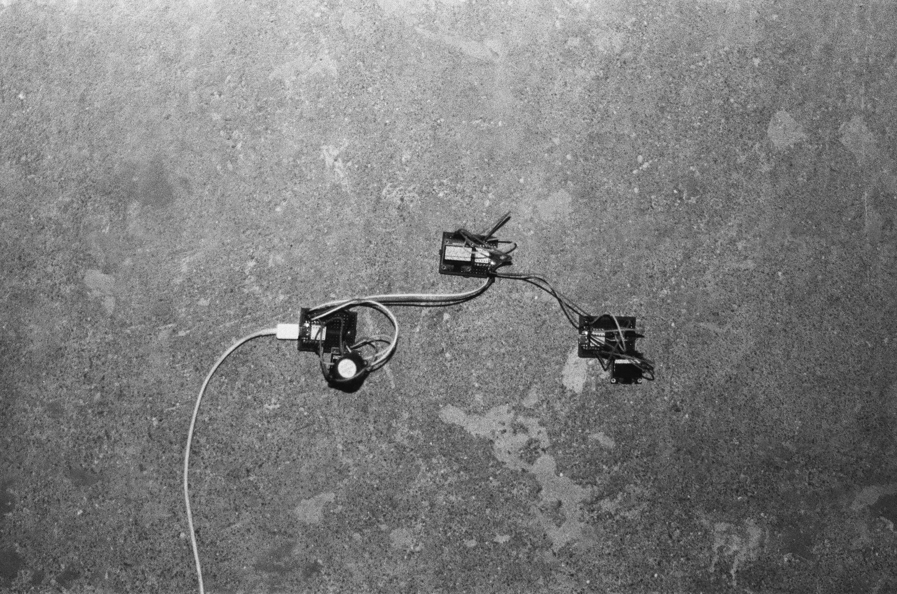
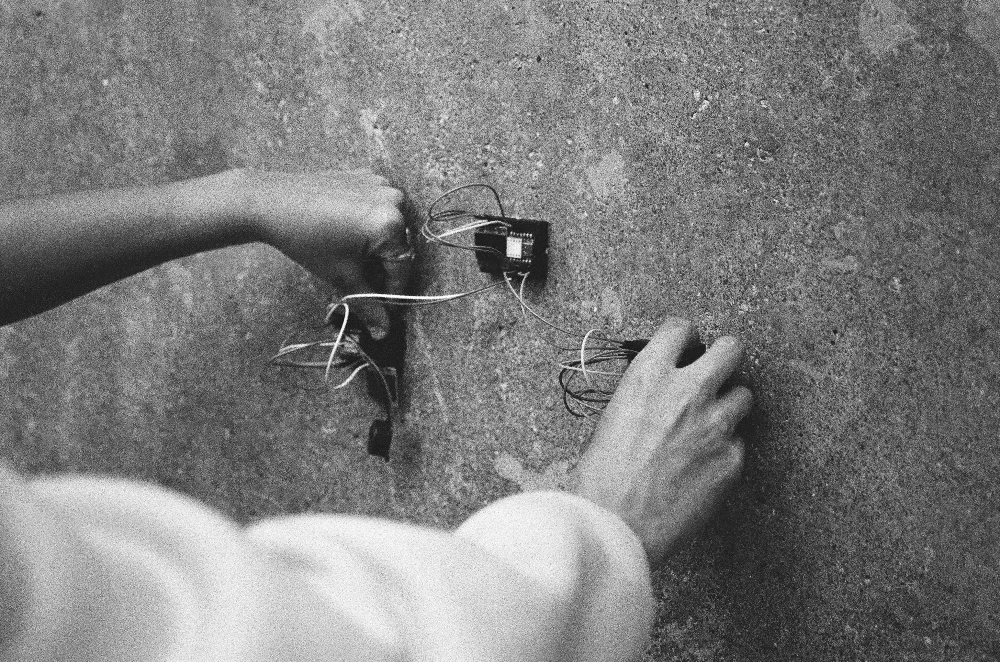
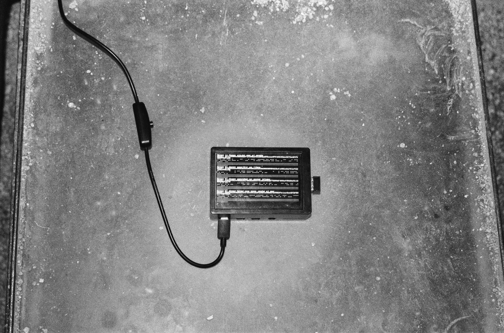
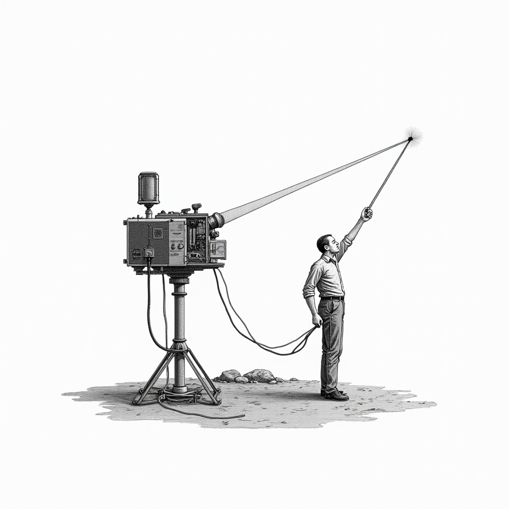
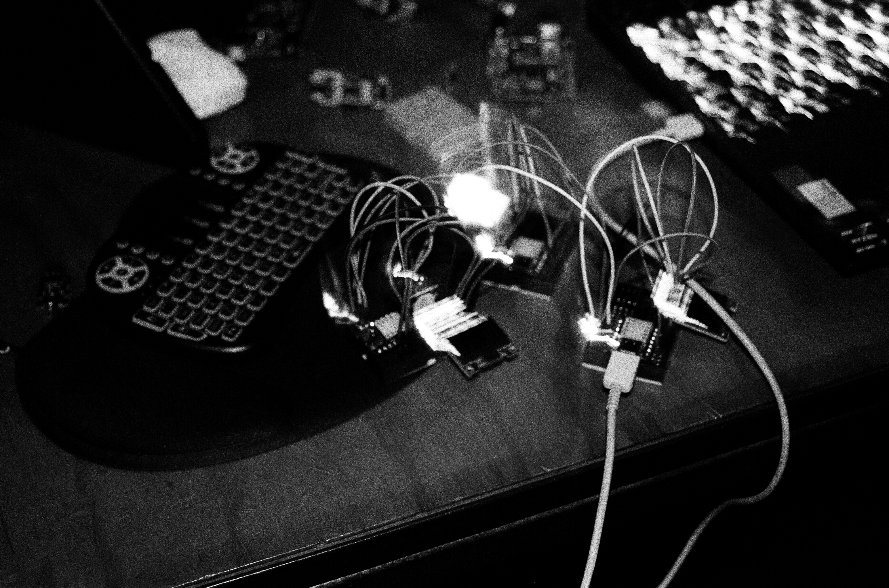
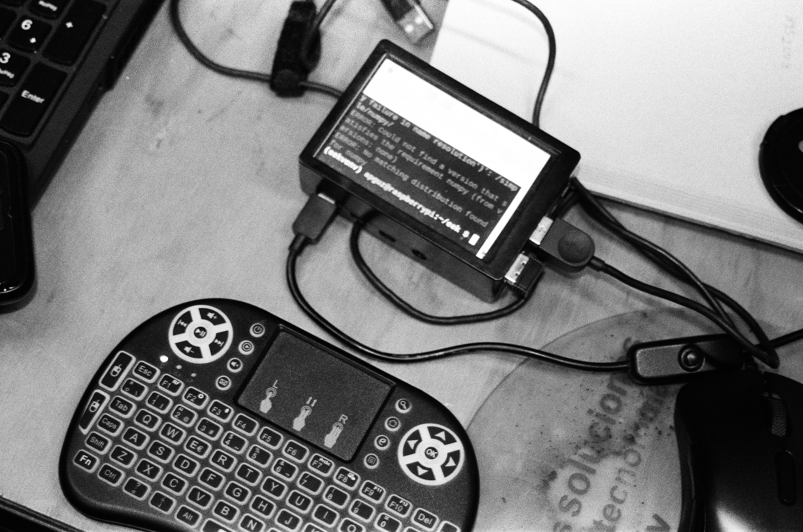
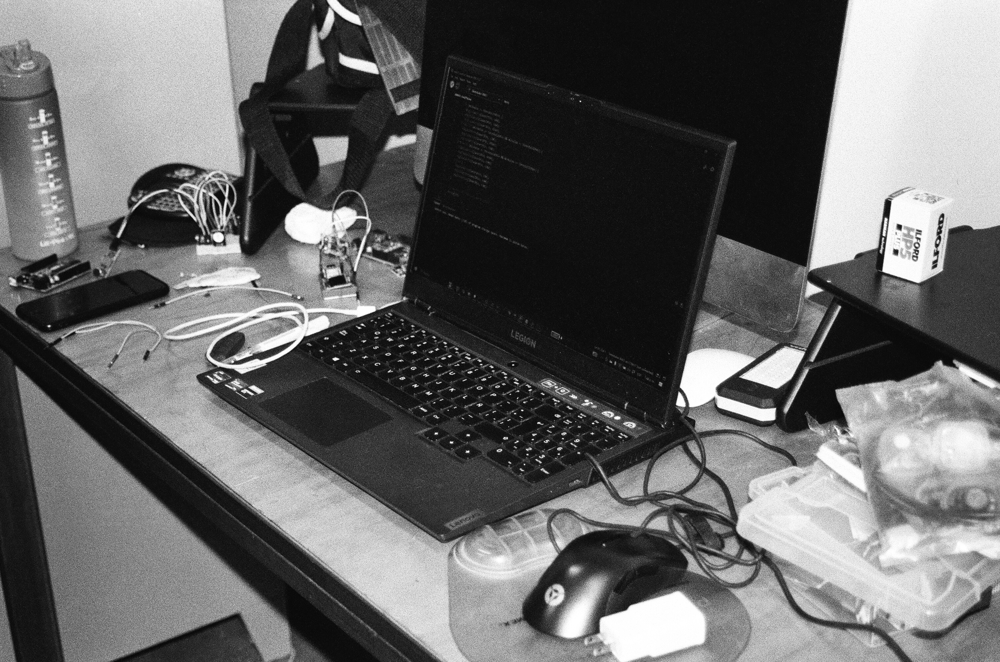
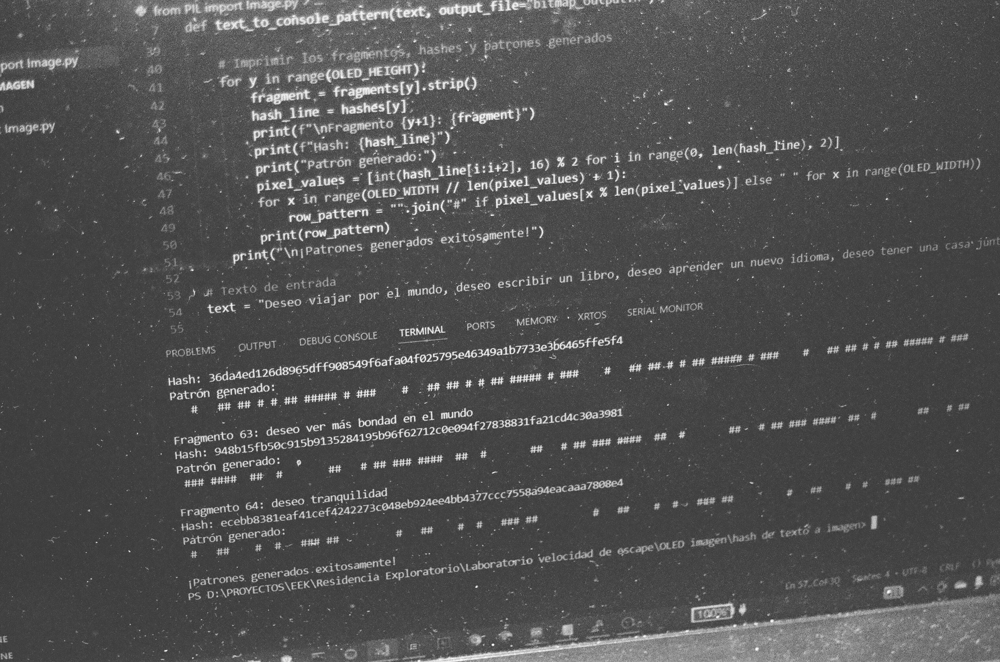
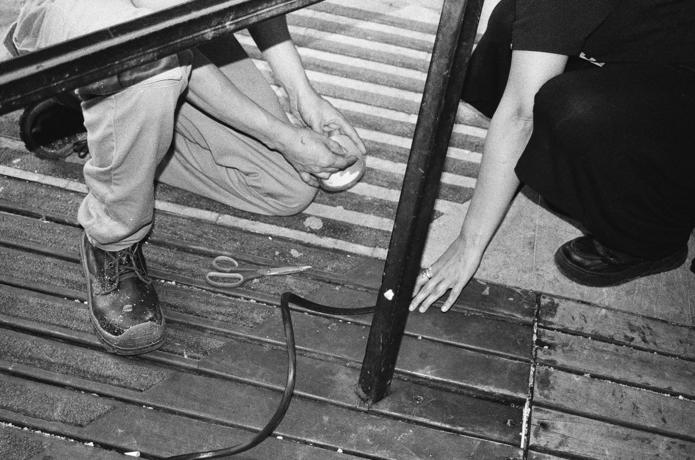
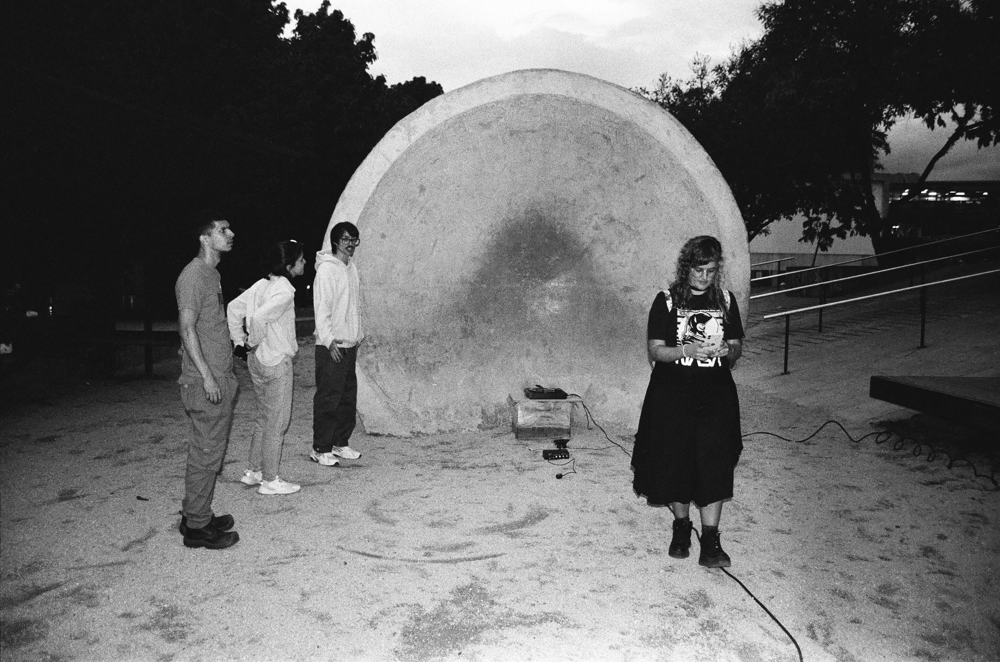

Fig. 01 · Instalación · Parque de los Deseos · Medellín · 2024



Fig. 02–04 · Circuito · Pantalla OLED · Láser · EEK-007 · 2024
Alguna vez leí o escuché que muchas veces confundíamos el brillo de los satélites con estrellas fugaces. Pensé en todos los deseos pedidos que se estrellaron contra el silencio, incluso los míos: "Le estuve pidiendo deseos a los satélites, con razón no volviste".
Nuestra relación con el vacío infinito siempre ha sido la de enviar cosas: discos, satélites, sondas, rovers, telescopios, señales de radio, humanos, deseos… Y la respuesta a muchas de esas cosas que hemos lanzado en busca de respuestas ha sido el SILENCIO del espacio sideral.

Mirando hacia arriba buscamos algo que resuleva nuestro deseo
En la tierra, silencio surge de una reflexión sobre nuestra relación con el vacío cósmico: enviar cosas al cielo esperando respuesta. Durante siglos hemos lanzado discos, sondas, satélites, señales de radio y deseos, que en su mayoría se pierden en el silencio del espacio sideral. La obra se inscribe en esa tradición de intentos por existir más allá de este mundo, transformando 64 deseos generados por una inteligencia artificial en un hash binario que se transmite mediante el parpadeo de un láser y el sonido intermitente de un zumbador.
El sistema compacto de microcontroladores y pantallas OLED convierte los deseos en un lenguaje mínimo de luz y sonido, como destellos frágiles y efímeros. Su primera activación tuvo lugar en Medellín, sobre la escultura "Mensajes a distancia" en el Parque de los Deseos. Actualmente, el dispositivo se encuentra sobre una estructura de piedra, enviando pulsos de deseo al vacío y recordándonos la fragilidad de nuestra voz cuando intenta atravesar el silencio del universo.
Esta obra es resultado de una residencia artística en el Exploratorio del Parque Explora realizada en noviembre de 2024.
ON EARTH, SILENCE is a research-creation-speculation project that, through the appropriation not only of the scientific discourse surrounding space knowledge but also of our own naivety, proposes a system for sending wishes transformed into signals. 64 wishes generated by artificial intelligence are transformed into a binary hash transmitted through the flickering of a laser and the intermittent sound of a buzzer. Its first activation took place in Medellín, on the sculpture "Mensajes a distancia" at the Parque de los Deseos.
El sistema toma 64 deseos generados por inteligencia artificial. Cada deseo se procesa mediante la función hash SHA-256, produciendo una cadena hexadecimal única de 64 caracteres. Esta cadena se convierte en un patrón binario de 128 píxeles que se renderiza en tres pantallas OLED de 128×64, cada una con un comportamiento diferenciado.
Script Python que genera el archivo bitmap_output.h compatible con Arduino. Contiene una matriz de 64×128 valores binarios (0s y 1s). También genera una representación en consola con los deseos, sus hashes y patrones visuales.
Dibuja el bitmap punto por punto. Cada pixel encendido (1) activa el zumbador. Delay de 700ms entre píxeles — ritmo lento y meditativo.
Muestra el bitmap completo de una vez — 64 deseos codificados simultáneamente como un campo visual denso de patrones abstractos.
Dibuja punto por punto. Cada pixel encendido activa el módulo láser. El sensor LDR lee la luz ambiental y modula el comportamiento del sistema.
Muestra los 64 deseos, sus hashes SHA-256 y la representación visual de cada patrón. El desplazamiento automático permite leer cada deseo junto a su codificación.
Reemplazar con imágenes reales en: img/obras/eek-007-proceso-01.jpg a 06.jpg





